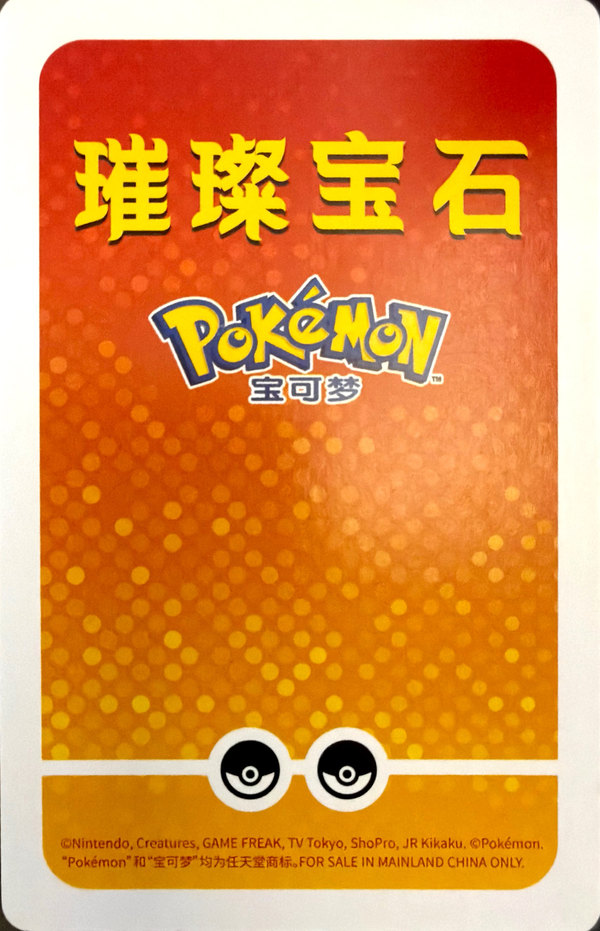
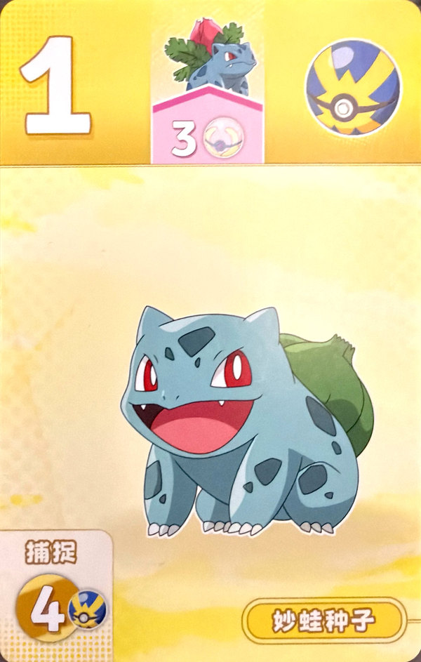
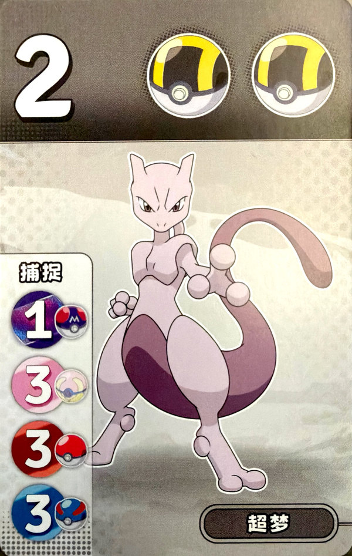
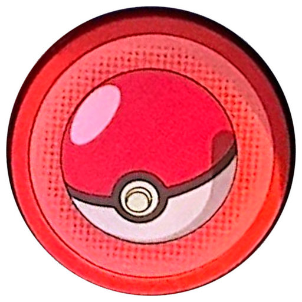
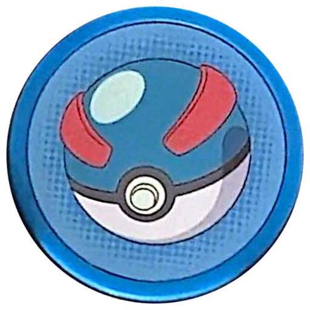
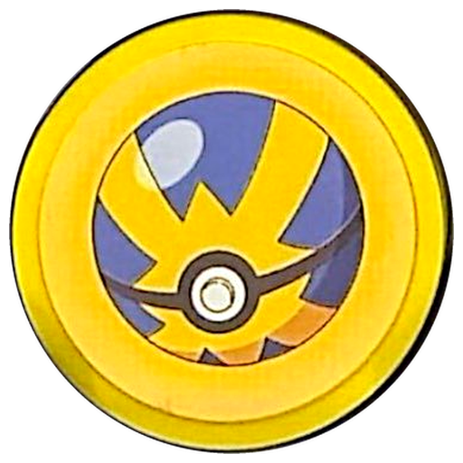

先玩起来
规则落在棋盘上才有意思。挑一款桌游，让 AI 陪你认真下完一局。






PICK YOUR NEXT EXPERIMENT
从熟悉的规则里，发现不熟悉的选择。
换个关键词试试，或者看看全部实验。
A LITTLE CURIOUS. A LITTLE COMPETITIVE.
把好玩的桌游、会思考的 AI 和关于策略的好奇心，放在同一张桌上。这就是这个小实验室想做的事。
规则落在棋盘上才有意思。挑一款桌游，让 AI 陪你认真下完一局。
拿什么、留什么、放弃什么？从对局记录出发，琢磨直觉之外的策略。
这里不会只有一种桌游。新的规则、新的对手、新的问题，都可以有自己的位置。